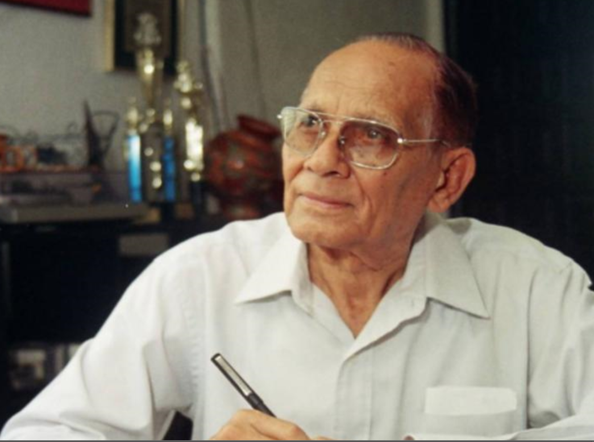
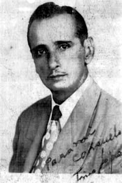

CANTAUTORES DE NICARAGUA
CARLOS MEJÍA GODOY
Carlos Arturo Mejía Godoy es un músico, compositor y cantautor nicaragüense,
y uno de los principales representantes de la canción testimonial de su país.
Nacido en Nicaragua el 27 de junio de 1943 en la ciudad de Somoto, departamento
de Madriz . Es uno de los más destacados representantes de la canción testimonial
o “nueva canción” nicaragüense.
Sus padres, Carlos Alberto Mejía Fajardo (músico) y María Elsa Godoy de Mejía
(maestra de escuela y artesana del pan). Carlos Mejía Godoy ha trascendido todas
las fronteras del arte y ha recorrido un largo camino hasta convertirse en un
polifacético personaje popular. Entre sus canciones están: Son tus perjúmenes mujer,
Nicaragua, Nicaragüita, Quincho barrilete, Flor de pino, La tumba del guerrillero,
El Solar de Monimbó, Alforja campesina, Yo te amo Nicaragua, Flor de mi colina,
Palomita Guasiruca, El Cristo de Palacagüina, Un galo de Chilincocos.
CAMILO ZAPATA
Ramón Arnoldo Zapata Zúñiga, más conocido como Camilo Zapata (Managua, 25 de septiembre
de 1917 - 23 de junio del 2009), fue un compositor y cantautor nicaragüense
considerado el creador del Son nica, ritmo musical propio y característico de
Nicaragua, siendo uno de los músicos y compositores más importantes de la música
vernácula popular nicaragüense.
Después estrena "El Nandaimeño", "El Solar de Monimbó" y "El Ganado Colorado", por citar
tres de sus piezas consagratorias, que se ejecutan en un ritmo que José Francisco Borgén
Su humildad le atrae simpatías; pero, más que su humildad, el hecho de llevar al micrófono
melodías frescas de nuestros campos" y también de nuestros pueblos y ciudadelas, como lo
revelará en sus canciones "Nindirí", "Ticuantepe" y "Callecita Colonial".
KATIA CARDENAL
Katia Cardenal Barquero nació en Managua, Nicaragua en el año 1963.
Comienza su afición por la música desde muy temprana edad. De familia de escritores,
poetas y pintores. A los quince años intrega al coro del Colegio Teresiano de Managua
donde cursó estudios de primaria y secundaria, obteniendo en 1981 el diploma de bachiller.
Cantante
Junto a su hermano Salvador Cardenal, formaron el Duo Guardabarranco en el año 1980,
grabando cinco álbumes y recorriendo más de 20 países en Europa y América en 15 años de
carrera artística.
Por esa época trabaja también como solista en algunas actividades en Canadá, Noruega, Nicaragua
y Rusia obteniendo el I lugar en 1990 como interprete en el festival OTI nacional y II en el OTI
internacional de Las Vegas.
TINO LÓPEZ GUERRA
Constantino López Guerra, más conocido como Tino López Guerra (Chinandega,
20 de julio de 1906 - Managua, 19 de julio de 1967), fue un compositor
nicaragüense de música vernácula popular, siendo considerado
el "Rey del Corrido Nicaragüense" porque sus composiciones más conocidas
pertenecen a este ritmo musical mexicano.
Nació en Chinandega, el 20 de julio de 1906, en el occidente del país,
siendo sus padres el médico Eduardo López Robelo y doña Celina Guerra Lizano,
nieta materna del presidente de Costa Rica Saturnino Lizano Gutiérrez.
Tuvo seis hermanos. Se casó con Consuelo Rosales con quien procreó dos hijos:
Constantino y María del Socorro.
Falleció en Managua, el 19 de julio de 1967 y fue sepultado justo el día de
su cumpleaños número 61, el 20 de julio en el Cementerio General de Managua.
En 2006, en el centenario de su natalicio fue trasladado al Cementerio San Pedro
como personaje ilustre de la Nación a la que tanto amó.
OTTO DE LA ROCHA
Otto Benjamín de la Rocha López (Jinotega, 23 de agosto de 1933-Managua,
25 de mayo de 2020)1 fue un cantautor, compositor y actor radial nicaragüense
conocido por la caracterización del personaje picaresco de Aniceto Prieto.
Era hijo de Benjamín de la Rocha y Graciela López, nunca estudió música, pero
heredó su afición musical de su abuelo materno Juan Fajardo, quien fue pariente
del padre de los hermanos Carlos y Luis Enrique Mejía Godoy. Contrajo matrimonio
en tres ocasiones, su última esposa fue la actriz radial Georgina Valdivia,
con quien compartió personajes radiales y anuncios televisivos.
De sus tres matrimonios tuvo diez hijos.
Falleció a los ochenta y seis años el 25 de mayo de 2020 a causas de una enfermedad
que lo aquejó desde 2016.1



